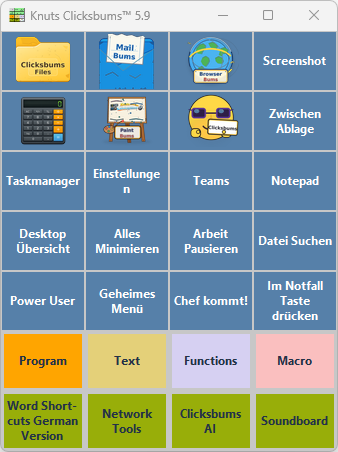
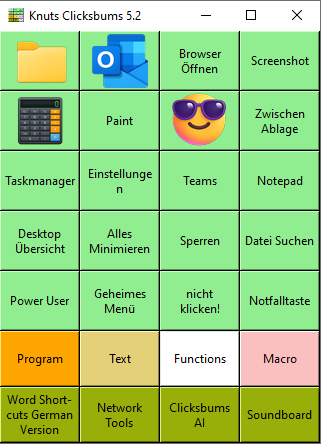

📝 Texte
Signaturen, Standardantworten, Adressen und andere Textbausteine mit einer Taste einfügen.
Knuts Clicksbums™ 5.9 · kostenlos · portabel · Windows
Knuts Clicksbums™ ist dein Shortcut-your-Life-Tool für Windows: Texte, Programme, Dateien und wiederkehrende Abläufe mit einem Klick. In Version 5.9 kommen globale Audiofunktionen und frei wählbare Farben dazu.
Kostenlos · werbe- und trackerfrei · lokal · portabel

„Warum mache ich diesen Schritt eigentlich noch selbst?“
Genau aus dieser Frage ist Knuts Clicksbums entstanden.
Eine Werkzeugkiste statt eines Spezialwerkzeugs
Signaturen, Standardantworten, Adressen und andere Textbausteine mit einer Taste einfügen.
Programme starten, Dateien und Ordner öffnen oder Webseiten direkt aufrufen.
Mehrere Aktionen zu Makros kombinieren und wiederkehrende Arbeitsschritte automatisieren.
Globale Lautstärke hoch- und herunterregeln, Audio stummschalten sowie das Standardmikrofon umschalten. Sound- und Anzeigeeinstellungen öffnen oder direkt das Snipping-Tool-Overlay starten.
Eigene Arbeitsbereiche für unterschiedliche Aufgaben, Programme oder Projekte.
Gestalte Tasten und Profile in deinen Farben und gib deinem Clicksbums einen eigenen Look.
Soundboards, Easter Eggs und natürlich auch völlig unnötige Clicksbums-Tasten. 😋
Neu in Version 5.9
Ein Blick auf die bisherige Ansicht und auf die neuen Möglichkeiten zur individuellen Gestaltung.

Nicht lesen. Anschauen.
Auf dem Kanal findest du Einblicke, Tipps und Praxisbeispiele rund um Knuts Clicksbums.
Der Clicksbums-Teaser
Sieh dir das kurze Produktvideo auf YouTube an.
Knuts Clicksbums™ 5.9
Das Kundenpaket enthält die Windows-EXE, Beispielprofile, Sounds, Icons und eine README.
Windows 10 / 11 · portable · keine klassische Installation
Wenn dir das Projekt gefällt, kannst du Knut freiwillig einen Kaffee ausgeben.
Kurz beantwortet
Nein. Ordner kopieren, EXE starten, fertig.
Nein. Viele Anwendungen lassen sich direkt über die Oberfläche einrichten. Für komplexere Makros hilft Nyquist – Dein Clicksbums AGENT.
Ja. Das Programm wird kostenlos bereitgestellt.